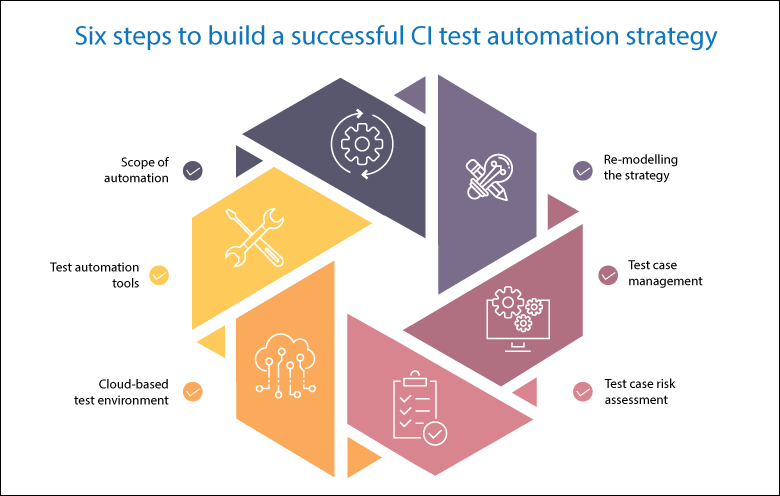

Automation
To be able to make changes on the main branch reliably the whole system must be retested, along with the new feature every time the code is merged. To do we need to Automate all or most of our testing. This requires advanced tooling and processes. Automation teams collaborate while continuously improving how they design, build, test, deploy, release, and monitor software applications.Automation increases collaboration and automates repetitive manual tasks.
